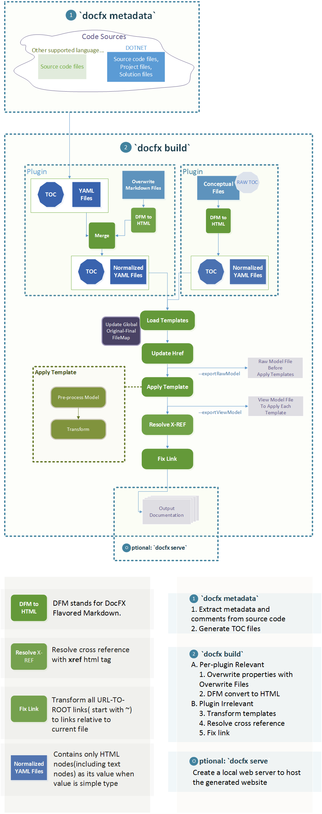

docfx Design Spec
- 2 minutes to read
-
-

0. Terms
| Term | Description |
|---|---|
| DFM | DocFX Flavored Markdown |
| API | The API generated from source code |
| Overwrite Files | The files with YAML header used to override YAML files when uid matches. |
1. Scenarios
docfx should support the following scenarios:
- Source Code => Website
- Conceptual => Website
- YAML files => Website
2. Architecture

3. Feature List
- Support for DocFX Flavored Markdown
- Ability to parse toc.json/toc.yml/toc.md
- Custom template naming: {type}.{extension}.tmpl under folder {templateName}
4. Open Issues
- Should we support other conceptual file format, for example, RST? ==> How to parse?
- How do you know which link to replace to html, and which not? ==>